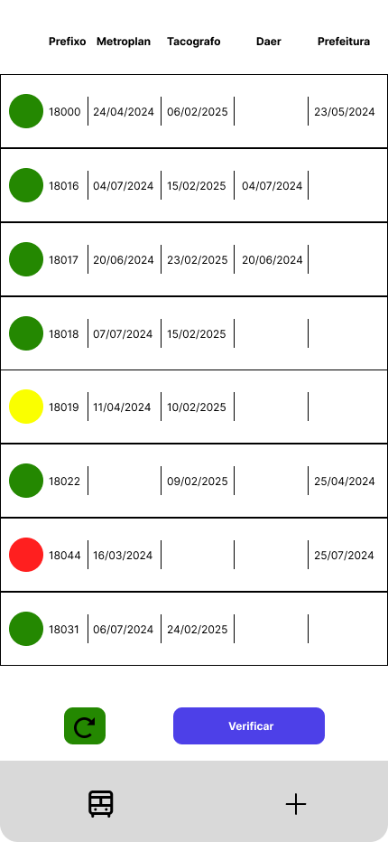

Projetos
Este é o resultado final de um site desenvolvido por mim desde sua UX até o resultado final, sua principal função é apresentar a empresa, exibir as linha e horarios auferidos pela empresa. Meu maior desafio foi desenvolver uma consulta em um banco de dados que retorna o valor restante em um cartão de trasporte sendo desenvolvido em PHP e Wordpress este concerteza é um dos meus chodos quando se trada de desenvolvimento de site.
Sou um especialista em resolver problemas de maneiras eficazes usando tecnologia, precisava conferir datas de validades de varios laudos de homologação e isto era feito atraves de planilhas excel oque gerava uma demanda muito grande ja que o trabalho não admitia erros, então desenvolvi um sistema usando Expo, React Native e Firebase criei um aplicativo mobile simples para castrar os laudos e definir sua validade, então em vez de conferir validade por validade bastava clicar em um botão que era eito esta conferencia automaticamente adicionando um aviso caso algum laudo estivesse vencido ou prestes a vencer
O resultado final da criação de um site para mostrar e solicitar orçamentos para serviços automotivos a ideia inicial era uma simples pagina com algumas imagens e um link de contato mas usei meus conhecimentos em design de interfaces e em desenvolvimento ReactJS e CSS e não criei um simples site mas sim uma identidade visual que remete a poder, modernidade, qualidade e elegancia.